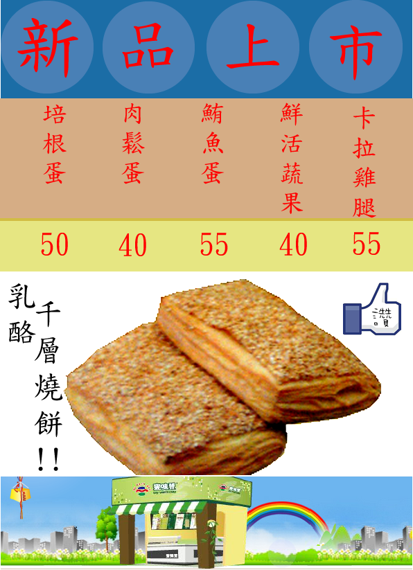

吉事吐司為本店的超級人氣商品，看似普通的土司，當你咬下一口，就會被滿滿的蒜、起司以及奶油的香味填滿您的味蕾，而沙拉又剛好彌補了多片吐司所帶來的乾燥，吃起來相當順口，絕對值得一試!!

燒餅是許多傳統豆漿店必賣的傳統早點，也是顧客回憶中的美食。本店的千層燒餅可搭配許多不同材料來符合消費者口味，像是培根、鮮蔬、幸力蛋等等，不同的搭配都會別有一番風味喔!!
現今社會養身的觀念逐漸的普及，我們也開設了素食專區讓消費者可以依照自己的健康狀況來調整早餐營養的攝取，期望大家都擁有健康美好的一天。
※素食部分商品餐有蛋，不能食用蛋者請特別注意

雞塊起司捲也是小孩子喜愛的一道餐點，除了內容物是孩子們喜愛的雞塊，以及營養的起司。其分量剛好也可以吃得完，對小朋友們是不錯的選擇喔~
有時候家長們是不是會煩惱小孩子早餐吃很少、甚至不吃而導致營養不良呢?! 我們提供蜂蜜熱狗捲的特殊組合讓小孩食用，裡面小孩喜歡的熱狗，並搭配甜甜的蜂蜜，相信每個小孩子都會忍不住多咬一口的!!

※所有餐點之價格與配料，以現場提供為主